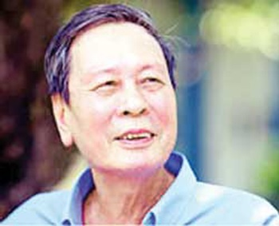
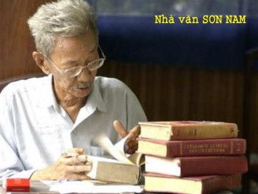

Viết thêm:
Nguyên Ngọc ghét nhất Trần Đăng Khoa. Tôi hỏi ông vì sao? Ông trả lời: “Vì trong một bài viết Khoa ví tôi với… Tố Hữu (!!!)
Tôi đi đòi nợ Nguyễn Khải

Nguyễn Khải
Ngày 15-3-2008 Nguyễn Khải qua đời. Các báo quốc doanh nhất loạt đưa tin đại tá nhà văn quân đội Nguyễn Khải qua đời. Điện thoại bàn nhà tôi réo liên hồi. Người ta muốn tôi viết bài về Nguyễn Khải. Sự nghiệp văn chương của ông thì cái giải thưởng Hồ Chí Minh đã nói đầy đủ. Người ta muốn có những kỷ niệm, những câu chuyện về cuộc đời, về nghiệp văn của ông để báo bán chạy hơn. Tôi từ chối. Thấy tôi từ chối đến mấy lần, bà xã nhà tôi bảo: “Thôi thì người ta nhờ, ông viết cho người ta. Ông cũng quen Nguyễn Khải mà”.
Tôi biết viết gì cho báo chí quốc doanh về Nguyễn Khải, nhà văn mà tôi đã từng nghe tiếng thở dài não nề của ông qua năm tháng?
Nguyễn Khải bảo tôi: “Nhà văn Việt Nam bị ba đứa nó khinh, thứ nhất là thằng lãnh đạo nó khinh, thứ hai là độc giả nó khinh, thứ ba là đêm nằm vắt tay lên trán… mình lại tự khinh mình!”
“Mình lại tự khinh mình” thì đau quá!!! Vì thế, tôi không lấy gì làm lạ, không ngạc nhiên tí nào khi đọc bài bút ký chính trị Đi tìm cái tôi đã mất của ông sau ngày ông từ trần ít lâu. Một con người mang tâm trạng suốt đời như thế mà vẫn phải sống, vẫn phải viết để tồn tại thì nhất định sẽ phải để lại một cái gì trước khi ra đi, để cáo lỗi với hậu thế. Nguyễn Khải chính là nỗi đau đớn trên hành tinh này của một người cầm bút và nhất định ông phải đi tìm “cái tôi” đã mất ở thế giới bên kia. Theo tôi, bài bút ký chính trị đó là bản án nghiêm khắc nhất, sâu sắc nhất cho tội ác của chế độ toàn trị đối với giới cầm bút ở nước ta thời cộng sản. Phương Tây đi trước Phương Đông về thể chế văn minh, đã đặt tên cho giới nhà văn là “personnel littéraire” trong đó danh “personnel” (giới) không ngẫu nhiên mà trùng với tính từ “personnel” (mang tính cá nhân). Cái “pẹc” (pésonnel) mà Chế Lan Viên hay dùng để ca ngợi cái cá nhân, cái tôi của nhà văn làm nên sự khác biệt, làm nên cái riêng, phong cách của một cây bút, đã bị chế độ toàn trị biến thành bầy đàn thì còn gì là văn chương chữ nghĩa. Vậy mà cả đời phải cầm bút trong một thể chế bầy đàn như thế, Nguyễn Khải đau là phải. Không đau mới lạ.
Nguyễn Khải khi còn ở đường Nguyễn Kiệm, tôi đến chơi, thấy nhà cao cửa rộng, phòng khách sang trọng, tôi khen rối rít. Ông tâm sự, thằng con trai đang làm ngành hàng không, lương mười mấy triệu một tháng, nó bỏ, ông lo lắm. Nó nói hết giờ chỉ ngồi tán gẫu phí sức lực của nó, nên nó ra kinh doanh và giàu có. Căn nhà to tát này là của nó.
Ở cái nhà như cái lâu đài thế mà ông chỉ nói chuyện buồn. Buồn lắm. Ông kể: “Thằng con tôi hay đi mua sách về đọc. Mẹ nó mắng: Sách của bố mày đầy ra đấy, sao không đọc mà phải đi mua. Nó nói: Sách của bố viết không đọc được! Mẹ nó mắng: Không viết thế thì lấy cứt mà ăn à (!)” Tôi nghe đến đấy thấy… choáng quá! Tôi không ngờ Nguyễn Khải có thể nói ra điều đó với tôi và ông bạn tôi là giáo viên văn, dạy chính những bài văn của ông trong sách giáo khoa. Cái thứ văn “nếu không viết thế thì lấy cứt mà ăn…”! Chính anh bạn này đã đưa tôi đến chơi với Nguyễn Khải ở ngôi nhà sang trọng này. Dằn vặt, đau khổ đến tận cùng nên nhà văn mới thốt ra những lời như thế.
Dịp kỷ niệm năm mươi năm báo Văn Nghệ của hội nhà văn, sau khi tổ chức ở Hà Nội, còn được tổ chức ở thành phố Hồ Chí Minh, tại dinh Thống Nhất. Là cộng tác viên của báo, tôi cũng được mời. Tôi gặp Nguyễn Khải và nói với ông rằng, tôi có đọc trên báo Văn Nghệ một bài mô tả một ông nhà văn nổi tiếng chuyên đi về Thái Bình, viết về Thái Bình rồi đặt câu hỏi: Vậy mà sự chuyện bạo loạn ở Thái Bình xảy ra rung chuyển dư luận trong ngoài nước, không biết trước đó ông nhà văn nổi tiếng kia đã nghe được cái gì, thấy được cái gì mà chẳng thấy ông báo trước được gì… Tôi bảo Nguyễn Khải: “Rõ ràng là người ta chỉ trích anh đấy!” Nguyễn Khải nghe tôi nói rồi chỉ cười bỏ đi. Anh bạn biên tập viên báo Văn Nghệ trong ban tổ chức buổi lễ đứng ngay cạnh tôi, khi Nguyễn Khải đi rồi, anh bảo tôi:”Bài đó chính Nguyễn Khải viết, ông ấy đến tòa soạn năn nỉ bọn tôi đăng. Ông ấy nói: Thôi thì mình chửi mình trước đi, người ta thương, sau này không chửi nữa”.
Ít lâu sau Nguyễn Khải là dọn về ngôi nhà bảy tầng lầu ở đường Tôn Đản Quận 4. Nhà đó cũng của con trai ông mới xây. Đây là một trong những nhà tư nhân có cầu thang máy sớm nhất ở thành phố Hồ Chí Minh. Ngôi nhà này là văn phòng công ty của con ông. Anh ta để bố ở trên tầng 7, có sân thượng rộng, thoáng mát. Khi tôi đến, anh chàng bảo vệ công ty mặc đồng phục như cảnh sát, nhìn tôi từ đầu đến chân rồi hất hàm hỏi: “Kiếm ai?” Tôi nói: “Kiếm ông Nguyễn Khải, bố của ông chủ anh”. Y hỏi: “Kiếm có việc gì?” Tôi nói: “Anh báo với ông Nguyễn Khải là, tôi là Lê Phú Khải kiếm ông Nguyễn Khải để đòi nợ!” Tay bảo vệ vội vào phòng thường trực gọi điện.
Khi lên đến lầu 7 rồi, tôi bảo Nguyễn Khải: “Tôi đến để đòi nợ bài ông hứa viết cho tạp chí Nghề Báo đây!” Nguyễn Khải chưa cho tôi về ngay, giữ ở lại ăn trưa và rồi nằm xuống sàn nói chuyện như mọi lần. Đó là cách tiếp khách quen thuộc của ông. Hai người (nếu là ba người cũng thế) nằm xuống sàn, đấu đầu vào nhau thành một hàng thẳng mà nói chuyện. Theo Nguyễn Khải thì nằm như thế nói chuyện được lâu, đỡ mỏi lưng.
Hôm đó Nguyễn Khải nói với tôi: “May quá ông ạ! Bữa trước ông Nguyên Ngọc đến đây, nếu bảo vệ nó đưa ông ấy lên phòng khách ở lầu 3 thì tôi xấu hổ không biết chui vào đâu!” Tôi hỏi: “Vì sao?” Nguyễn Khải trả lời: “Vì ở lầu 3 tôi có treo cái bằng giải thưởng Hồ Chí Minh. Ông Nguyên Ngọc mà không được giải thưởng Hồ Chí Minh mà tôi lại được thì xấu hổ quá!” Ngẫm nghĩ một lúc ông nói: “Nguyên Ngọc quyết liệt lắm, tôi không thể có cái quyết liệt ấy. Tôi hèn lắm!”
Nguyễn Khải là thế. Một nhà văn tên tuổi như ông mà nhận mình hèn thì ông không hèn chút nào. Ít nhất ông cũng là một con người chân thật, có liêm sỉ. Bút ký Đi tìm cái tôi đã mất của ông là một áng văn bất hủ. Một “hiện thực muốn có” bên cạnh một “hiện thực không muốn có” là nền văn học hiện thực xã hội chủ nghĩa xuất hiện ở Việt Nam thời cộng sản. Người ta hay nói đến một chủ nghĩa hiện thực không bờ bến …phải chăng …
Nguyên Thủ tướng Võ Văn Kiệt đã đến viếng ông. Khi người ta bảo không còn chỗ trong nghĩa trang thành phố để an táng ông, ông Kiệt nói: “Lấy suất của tôi cho Nguyễn Khải (!)
Viết thêm:
Liệu tôi có thể viết cho các báo quốc doanh những câu chuyện kể trên hay không? Vì thế, khi đọc những bài “khóc” Nguyễn Khải trên báo, tôi thấy nó nhạt nhẽo, vô duyên và dối trá. Trừ một bài của nhà báo Vu Gia là tôi thấy đọc được.
Đó là Sơn Nam

Sơn Nam kể với tôi: Hồi tao mới lên Sài Gòn kiếm sống, một lần bà già tao từ quê lên hỏi: Mày lên đây làm gì để sống? - Viết văn. Bà già hỏi lại: Viết văn là làm gì? Tao biểu bả: Viết văn là có nói thành không, không nói thành có (!). Bả nổi giận mắng: Mày là thằng đốn mạt. Tao không cãi, chỉ làm thinh! Sau chừng như thương con quá, bà lại hỏi: Thế viết văn có sống được không? Tao bảo: Viết một giờ bằng người ta đạp xích lô cả ngày! Bả thấy vậy không hỏi gì nữa rồi lặng lẽ ra về.
Sơn Nam đã viết văn từ đó đến nay, 50 năm có lẻ. Tập truyện nổi tiếng nhất của ông là Hương rừng Cà Mau đã tái bản nhiều lần. Ông được độc giả tấn phong là nhà “Nam bộ học” với hàng loạt tác phẩm khảo cứu: Lịch sử khẩn hoang miền Nam, Đồng bằng sông Cửu Long, Văn minh miệt vườn, Cá tính miền Nam, Bến Nghé xưa … Ông rành về phong tục, lễ nghi, ẩm thực của dân Nam bộ. Mỗi buổi sáng, ông thường uống cà phê ở quán sân Nhà truyền thống quận Gò Vấp đường Nguyễn Văn Nghi. Ai có việc gì cần hỏi về đất nước con người Nam bộ thường ghé tìm ông ở đó. Kể cả mời ông đi tế lễ ở đình chùa! Có người làm ăn khá giả tìm ông để biếu ít tiền uống cà phê (!)
Dạo nhà xuất bản Trẻ thành phố Hồ Chí Minh tổ chức kỷ niệm 20 năm thành lập, có mời ông với tư cách là cộng tác viên ruột lên phát biểu trong buổi lễ long trọng đó. Ông nói ngắn gọn: “Tôi sức yếu quá, nếu khỏe như Huỳnh Đức thì đã đi đá banh rồi. Lại xấu trai nữa, nếu không đã đi đóng phim như Chánh Tín từ lúc còn trẻ. Vừa ốm yếu lại vừa xấu trai nên đành đi viết văn vậy. Bây giờ Nhà xuất bản Trẻ làm ăn khấm khá, các anh chị có cơm ăn, tôi cũng có chút cháo!” Mọi người cười rộ.
…Dạo Sài Gòn kỷ niệm 300 năm, Sơn Nam có theo một đoàn phim ra Quảng Bình dự lễ tưởng niệm Tướng quân Nguyễn Hữu Cảnh người Quảng Bình có công khai phá đất Nam bộ. Khi làm lễ, Sơn Nam giở gói đồ khăn đóng áo dài của mình đem từ Sài Gòn ra, mặc vô và tế lễ rất đúng bài bản. Các cụ Quảng Bình khen nức nở: Trong Nam người ta có lễ hơn cả mình ngoài này! Sơn Nam nói: Trong Nam cũng có nhiều thằng lưu manh lắm, nhưng cử người đi xa, phải cử thằng có lễ chớ! Các cụ Quảng Bình ngẩn người!
Trong giới nhà văn, Sơn Nam là tác giả được một nhà xuất bản lớn ở thành phố Hồ Chí Minh mua bản quyền toàn bộ tác phẩm. Khi tôi hỏi nhà văn giá bao nhiêu ông lắc đầu: “bí mật” (!)
Những lần trà dư tửu hậu với Sơn Nam như thế, tôi thường mời ông ăn trưa, vì biết ông đi bộ đến quán cà phê rồi ở đó đến tối mới về. Vào quán, bao giờ ông cũng kêu: Cho cái món gì rẻ nhất, ngon nhất, và ngồi được lâu nhất (!)
Sơn Nam để lại cho đời một sự nghiệp sáng tạo thật đồ sộ. Bao gồm nhiều đầu sách khảo cứu, truyện ngắn, tiểu thuyết. Đọc Sơn Nam người ta kinh ngạc về sự độc đáo của văn phong. Ông viết như nói, như một ông già Nam bộ kể chuyện đời trong quán cà phê. Nhưng sức nặng của thông tin và cảm xúc của người viết khiến lời văn biến hóa khôn lường. Đừng có ai đi tìm thể loại hay bố cục trong một truyện ngắn hay một cuốn sách của Sơn Nam. Nhưng đã chạm đến nó là phải đọc đến trang cuối. Vì càng đọc càng thấy yêu nhân vật của ông. Càng thấy yêu mảnh đất Nam bộ, miền cực nam của đất nước. Ông đã “viết mọi thể loại trừ thể loại nhàm chán” như có nhà lý luận đã tuyên bố! Có lần tôi nhờ ông viết một bài cho Đài tiếng nói Việt Nam để kỷ niệm Cách mạng Tháng Tám ở Nam bộ. Mấy ngày sau, cũng tại quán cà phê ở Gò Vấp, ông đưa tôi bài Nhớ ngày Cách mạng Tháng Tám ở U Minh đánh máy bằng cái máy chữ chữ nhỏ li ti như con kiến. Đài phát xong tôi thấy “tiếc” quá, vì chữ nghĩa phát lên trời rồi gió bay đi. Tôi bèn gửi bài đó cho báo Cà Mau. Khi in lên, bạn đọc, cán bộ và đồng bào và các nhà nghiên cứu của vùng đất này đều kinh ngạc về trí nhớ của Sơn Nam. Bài báo đó là một tư liệu lịch sử sống động, chưa từng ai ghi chép được như thế về những ngày Cách mạng Tháng Tám ở U Minh. Thư gửi về tòa soạn tới tấp.
Riêng tôi có những kỷ niệm không dễ quên với Sơn Nam. Hồi chưa thống nhất đất nước, từ Hà Nội tôi đã đọc hầu hết các tác phẩm của ông do tôi làm ở ban miền Nam, có đường dây chuyển sách báo từ đô thị miền Nam ra cho cán bộ nghiên cứu. Đọc rồi mê luôn. Vì thế ngày cuối năm 1975, lần đầu tiên được vô Nam (trước khi đi còn phải đổi tiền như đi nước ngoài), tới Sài Gòn, việc đầu tiên của tôi là đi tìm Sơn Nam để biếu ông một chai rượu nếp Bắc. Tìm mãi, vô đến bốn con hẻm, bốn cái “xuyệch” (sur) ở đường Lạc Long Quân mới tìm được nhà ông. Nhưng ông đi vắng. Tôi đành gửi chai rượu cho vợ nhà văn. Bà hỏi tôi: “Chú là thế nào với ông Sơn Nam?” Tôi thưa: là độc giả hâm mộ Sơn Nam, từ Hà Nội vô phải ra ngay nên chỉ ghé thăm sức khỏe nhà văn.
Mười năm sau, lần đầu tôi gặp Sơn Nam tại quán cà phê ở Gò Vấp, tôi kể lại chuyện chai rượu 10 năm trước. Sơn Nam vẫn nhớ rành rọt: Tao không ngờ ở ngoài Bắc chúng mày cũng đọc tao kỹ như vậy.
Nói cho thực công bằng, những truyện ngắn như Trao thân con khỉ mốc của Phi Vân trong tập Đồng quê (giải nhất văn chương của Hội Khuyến học cần Thơ 1943) và Tình nghĩa giáo khoa thư trong Hương rừng Cà Mau của Sơn Nam là những kiệt tác đáng được đưa vào sách giáo khoa như Lão Hạc, Chí Phèo của Nam Cao đã được.
Lần cuối cùng tôi gặp Sơn Nam là cách đây vài tháng, tại nhà riêng của ông ở một con hẻm đường Đinh Tiên Hoàng. Hôm đó tôi đem một cái nhuận bút của báo Cà Mau về cho ông. Không ngồi dậy được, ông phải nằm tiếp khách. Bất ngờ ông hỏi tôi: Một tỷ là bao nhiêu tiền hả mày? Câu này ông đã hỏi tôi một lần, nghĩ là ông hỏi giỡn, nên lần đó tôi không trả lời. Nay ông lại hỏi, nên tôi thưa: Là một nghìn triệu “bố” ạ! Ông trợn mắt: Dữ vậy? Tôi nói: Không tin “bố” hỏi con gái “bố” kia kìa.
Khi biết rõ một tỷ là một nghìn triệu, nét mặt nhà văn nặng trĩu ưu tư. Có lẽ ông đang nghĩ đến những vụ tham ô, lãng phí cả trăm tỷ, ngàn tỷ mà ông đọc được trong những xấp báo đang để quanh người ông kia!
Nếu ai hỏi tôi về Sơn Nam, tôi sẽ trả lời: Sơn Nam là một nhà văn rất vui tính, đã…chết vì quá buồn!
14-8-2008
Sơn Nam đã đi xa. Nhiều người bây giờ còn nhớ câu nói dí dỏm của ông: “Làm văn chương là nghèo rồi. Nếu làm nghề này mà giàu được thì Ba Tàu Chợ Lớn đã làm rồi!”
Lúc còn sống, Sơn Nam ý thức một cách rõ ràng về cái sự nghèo của nhà văn. Bây giờ thì Sơn Nam của chúng ta không còn nữa. Nhưng nghĩ cho kỹ thì ông không nghèo. Trái lại, rất giàu có là đàng khác. Ngắm ngôi nhà lưu niệm Sơn Nam tọa lạc trên một thế đất 2000 mét vuông, nhìn ra phong cảnh cỏ cây, sông nước và những gì có trong ngôi nhà đó, người ta phải suy nghĩ như thế.
Ngày 13 tháng 7 năm Canh Dần, tức ngày 22 tháng 8 năm 2010, nhà lưu niệm Sơn Nam được vợ chồng chị Đào Thúy Hằng, con gái của nhà văn khánh thành nhân ngày giỗ thứ hai của ông, tại ấp 4 xã Đạo Thạnh ngoại ô thành phố Mỹ Tho, tỉnh Tiền Giang. Là một công trình văn hóa “phi chính phủ” nên ngày khánh thành không có giấy mời in ấn, dấu mộc nhiêu khê. Chỉ nhắn bằng điện thoại, ai biết thì tới. Tôi từ thành phố Hồ Chí Minh cũng được người ta “nhắn tin”, đến nơi thì thấy văn võ bá quan đủ cả. Đảo mắt một lược, tôi nhận ra nhà văn Nguyễn Quang Sáng từ thành phố Hồ Chí Minh tới, nhà văn Trang Thế Hy từ Bến Tre qua, soạn giả ca cổ Châu Thanh, hiệu trưởng trường đại học Tiền Giang, các văn nghệ sĩ của tỉnh… Chỉ còn cách đứng xa ngắm toàn cảnh nhà lưu niệm này vì bên trong khách đã ngồi chật cứng. Phải nói là đẹp. Nhà xây ba gian hai chái, hàn hiên rộng, thoáng mát, có cửa lá sách thông với ba gian bên trong. Một kiểu nhà ba gian hai chái ở miền Bắc, được các phú hào ở Nam bộ cải tiến cho hợp với miền Nam xứ nóng quanh năm. Đặc biệt, mái ngói hai tầng làm cho ngôi nhà rất bề thế. Anh Nghị, con rể nhà văn cho hay, chính anh lái máy ủi để ủi đất tạo thế một quả đồi thấp làm nền cho ngôi nhà. Vì thế, đứng từ thềm nhà nhìn ra, thấy được cả phong cảnh cỏ cây, sông nước phía trước. Để có được phong cảnh này, vợ chồng chị Hằng đã phải chắt chiu mua lại từng mảnh đất nhỏ của 5-6 chủ đất phía trước nhà trong gần hai năm. ”Ông bà ta chỉ xây dựng phong cảnh một ngôi chùa, chứ không xây dựng một ngôi chùa”. Nguyễn Đình Thi đã có nhận xét xác đáng như vậy về kiến trúc đình chùa nước ta. Điều này rất đúng với nhà lưu niệm Sơn Nam. Chính vì vậy, từ khi nhà lưu niệm khánh thành, chị Thúy Hằng cho biết, ngày nào cũng có khách bốn phương tới thắp hương, tham quan, chụp hình lưu niệm.
Hôm đó là tháng áp Tết, mọi người bận rộn việc nhà, số khách thăm nhà lưu niệm không nhiều, nên tôi có thể thư thái xem các hiện vật bên trong. Ấn tượng nhất là ngay lối trước sân, phía bên phải là tượng Sơn Nam tạc trên một phiến đá dựng đứng, bên trái là bút tích, cũng được tạc trên đá: bài thơ duy nhất của ông, không đề, mà ông lấy làm lời tựa cho cuốn Hương rừng Cà Mau trong đó có hai câu kết mà bao nhiêu người thuộc:
Phong sương mấy độ qua đường phố
Hạt bụi nghiêng mình nhớ đất quê
Hầu hết tác phẩm của Sơn Nam được Nhà xuất bản Trẻ mua bản quyền, tái bản, được lưu giữ trong một tủ kiếng lớn chiếm hết một gian nhà. Nhiều cuốn sách đã bạc màu với thời gian của Sơn Nam, ấn hành từ những năm 70 thế kỷ trước đã được độc giả yêu mến đem đến tặng cho nhà lưu niệm, có chữ ký, tên tuổi, bút tích của người tặng. Tranh chân dung, tranh khắc gỗ, tượng gỗ, tượng đá, ảnh chụp Sơn Nam của các nghệ sĩ nhiếp ảnh, họa sĩ, điêu khắc gia nổi tiếng, chuyên nghiệp và nghiệp dư từ nhiều nguồn đã hội tụ về đây. Thành thử, xem nhà lưu niệm, người ta được thưởng thức nhiều phong cách, nhiều trường phái hội họa, điêu khắc, nhiếp ảnh cùng sáng tạo về Sơn Nam. Ví dụ, riêng ký họa, tôi được xem chân dung Sơn Nam do ba họa sĩ Tạ Tỵ, Lê Quang, Cù Huy Hà Vũ vẽ.
Tôi đặc biệt thích thú một cái máy chữ cổ, do một sinh viên có tên là Bùi Thế Nghiệp tặng nhà lưu niệm, kèm theo lá thư Sơn Nam viết lúc tặng anh cái máy. Số là, sinh viên Nghiệp là bạn đọc hâm mộ nhà văn. Cậu thường chở nhà văn đi chơi (Sơn Nam không biết đi xe đạp, xe máy - LPK). Lúc nhà văn bệnh nặng vào năm 2005, Nghiệp đến xin nhà văn một kỷ vật gì đó, phòng khi ông đi xa. Nhà văn đã cho anh cái máy chữ kèm theo lá thư nhỏ chứng nhận đây là máy chữ của Sơn Nam tặng. Nay đọc báo biết có nhà lưu niệm Sơn Nam, Nghiệp đến tặng lại. Nhìn cái máy chữ của Sơn Nam được lưu giữ, tôi bỗng nhớ đến cái máy chữ của văn hào Balzac trong nhà tưởng niệm Balzac(Maison de Balzac) ở nhà số 47 phố Raynouard Quận 16 Pari mà tôi đã có dịp đến thăm. Nhà tưởng niệm Balzac là căn hộ có 5 buồng nhỏ ở tầng trên cùng một ngôi nhà ba tầng lầu. Balzac (sinh thời cũng rất nghèo) đã trốn nợ trên tầng cao của ngôi nhà này từ năm 1840 đến năm 1847. Năm 1949 chính quyền thành phố Paris mua lại cả ngôi nhà rồi sửa chữa và năm 1960 mở cửa cho tham quan. Maison de Balzac có các tác phẩm của bộ Tấn trò đời (La Comédie humaine) và cái máy chữ. Sao nó giống cái máy chữ của Sơn Nam đến thế!
Bắt chước mọi người, tôi cũng đem đến tặng nhà lưu niệm bản thảo những bài mà tôi đã đặt ông viết cho đài phát thanh Tiếng nói Việt Nam này không ở đâu lưu trữ và 10 tấm hình “có một không hai” tôi chụp những năm ông hay lang thang ở quận Gò Vấp. Có một tấm hình tôi bất chợt ghi lại lúc ông đang cúi xuống long khom viết trên một cái yên xe máy ngay giữa đường phố!
Với những nhà lưu niệm do người dân tự tạo nên như nhà lưu niệm Sơn Nam, ai dám bảo đồng bằng sông Cửu Long là “vùng trũng”văn hóa?